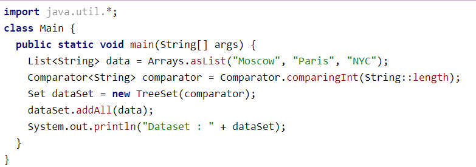
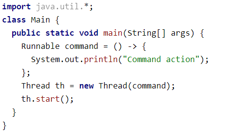
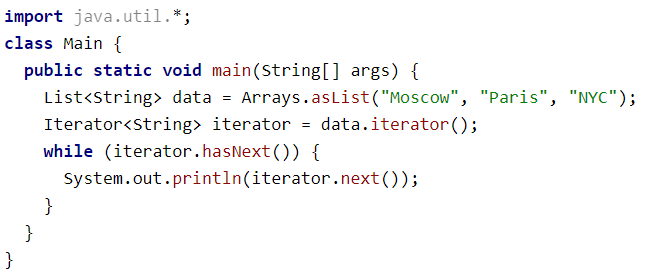
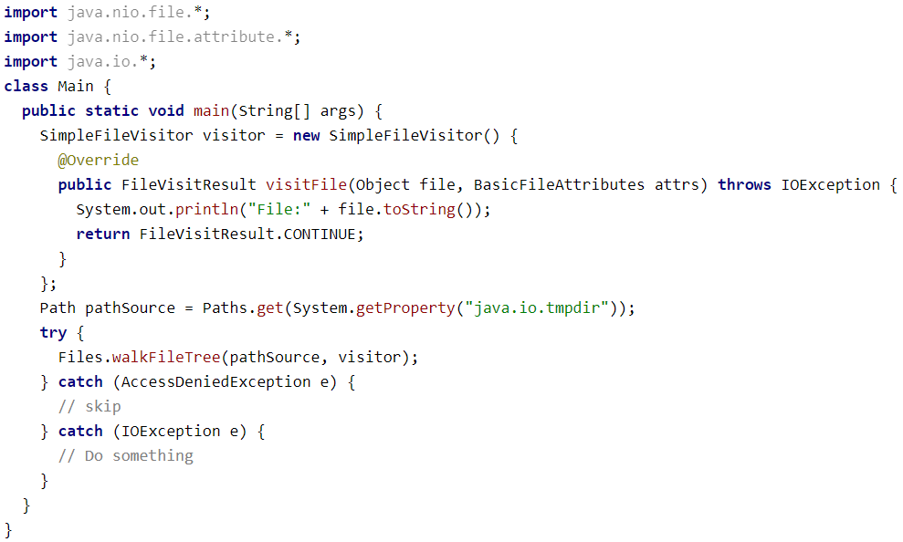
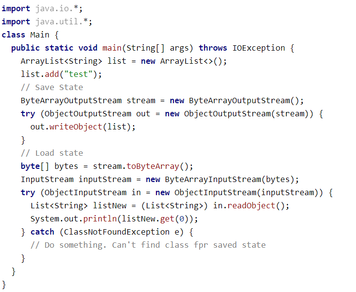

Java
Поведенческие шаблоны
Итак, мы разобрались, как можно создать объекты и как можно организовать связь между классами. Осталось самое интересно — обеспечить гибкость в изменении поведения объектов. И в этом нам помогут поведенческие паттерны.
Одним из самых часто упоминаемых паттернов является паттерн "Стратегия". С него же начинается изучение паттернов в книге "Head First. Паттерны проектирования". При помощи паттерна "Стратегия" мы можем внутри объекта хранить то, каким образом мы будем выполнять действие, т.е. объект внутри хранит стратегию, которая может быть изменена в том числе во врем выполнения кода.
Этот паттерн мы часто используем, когда применяем компаратор:
Перед нами — TreeSet. У него есть поведение — TreeSet поддерживает порядок элементов, т.е. сортирует их (т.к. он является SortedSet).
У этого поведения есть стратегия, определённая по умолчанию, которую мы видим в JavaDoc: сортировка в "natural ordering" (для строк это лексикографический порядок). Так происходит, если использовать конструктор без параметров.
Но если мы захотим поменять стратегию, то мы можем передать в конструктор Comparator. В данном примере мы можем создать наш набор как new TreeSet(comparator), и тогда порядок хранения элементов (стратегия хранения) поменяется на тот, который указан в компараторе.
Интересно, что есть почти такой же паттерн с названием "Состояние" (State). Паттерн "Состояние" говорит, что если у нас есть у главного объекта некоторое поведение, зависимое от состояние этого объекта, то тогда можно описать само состояние в виде объекта и менять объект состояния. А вызовы из главного объекта делегировать состоянию.
Ещё один паттерн, известный нам с изучения самых основ языка Java — паттерн "Комманда". Этот паттерн проектирования говорит о том, что различные команды можно представлять в виде разных классов. Данный паттерн очень похож на паттерн "Стратегия". Но в паттерне "Стратегия" мы переопределяли то, как будет выполняться конкретное действие (например, сортировка в TreeSet). В паттерне "Комманда" же мы переопределяем то, какое вообще действие будет выполнено.
Паттерн комманда с нами каждый день, когда мы используем потоки:
Как видим, command определяет действие или комманду, которая будет выполнена в новом потоке.
Так же стоит рассмотреть и паттерн "Цепочка обязанностей" (Chain of responsibility). Данный паттерн тоже очень просто. Этот паттерн говорит, что если что-то надо обработать, то можно собрать обработчики в цепочку.
Например, такой шаблон часто используется в веб-серверах. На входе сервер имеет некоторый запрос от пользователя. Дальше этот запрос проходит цепочку обработки. В этой цепочке обработчиков есть фильтры (например, не принимать запросы из чёрного списка IP-адресов), обработчики аутентификации (пускать только разрешённых пользователей), обработчик заголовков запроса, обработчик кэширования и т.д.
Но есть в Java и более простой и понятный пример — java.util.logging:

Как видно, обработчики (Handlers) добавляются в список обработчиков логгера. Когда логгер получает сообщение для обработки, каждое такое сообщение проходит через цепочку хэндлеров (из logger.getHandlers) данного логгера.
Ещё один паттерн, который мы видим каждый день "Итератор". Суть его заключается в том, чтобы разделить коллекцию объектов (т.к. класс, представляющий структуру данных. Например, List) и обход этой коллекции.
Как видно, итератор — не является частью коллекции, а представлен отдельным классом, который обходит коллекцию. Использующий итератор даже может не знать про то, по какой коллекции он итерируется, т.е. какую коллекцию он обходит.
Стоит рассмотреть и паттерн "Посетитель" (Visitor).
Паттерн посетитель очень похож на итератор. Данный паттерн помогает обходить структуру объектов и выполнять действия над этими объектами. Отличаются они скорее концепцией. Итератор обходит коллекцию так, что клиенту, использующему итератор, всё равно, что за коллекция внутри, важны лишь элементы из последовательности.
Посетитель же именно про то, что есть некоторая иерархия или структура объектов, которые мы посещаем. Например, мы можем использовать отдельную обработку каталогов и отдельную обработку файлов.
В Java "из коробки" есть реализация этого паттерна в виде java.nio.file.FileVisitor:
Иногда возникает необходимость одним объектам реагировать на изменения в других объектах и тогда нам поможет паттерн "Наблюдатель" (Observer).
Cамый удобный способ — это обеспечить механизм подписки, позволяющий одним объектам следить и реагировать на события, происходящие в других объектах. Данный паттерн часто применяется в различных Listener'ах и Observer'ах, реагирующих на разные события.
Как самый простой пример можно вспомнить реализацию этого паттерна из JDK первой версии:
Есть ещё один полезный поведенческий шаблон — "Посредник" (Mediator). Полезен он тем, что в сложных системах помогает убрать связь между разными объектами и делегировать все взаимодействия между объектами некоторому объекту, который и является посредником.
Одним из самых ярких применений данного паттерна является Spring MVC, который использует этот паттерн. Подробнее про это можно прочитать здесь: "Spring: Mediator Pattern".
Часто можно увидеть в примерах так же java.util.Timer:
Пример внешне скорее напоминает паттерн комманда. А суть паттерна "Посредник" скрыта в реализации Timer'а. Внутри таймера есть очередь задач TaskQueue, есть поток TimerThread. Мы, как клиенты этого класса, не взаимодействуем с ними, а взаимодействуем с Timer'ом, который на наш вызов его методов обращается к методам других объектов, посредником которых является.
Внешне может показаться очень похоже на "Фасад". Но разница в том, что когда используется Фасад — компоненты не знают, что фасад существует и обращаются друг к другу. А когда используется "Посредник", то компоненты знают и используют посредника, но не обращаются друг к другу напрямую.
Стоит рассмотреть и паттерн "Шаблонный метод" (Template Method)
Понятный уже по названию шаблон. Суть заключается в том, что код написан так, что пользователям кода (разработчикам) предоставляется некоторый шаблон алгоритма, шаги в котором разрешается переопределять. Это позволяет пользователям кода не писать весь алгоритм, а думать только над тем, как правильно выполнить тот или иной шаг этого алгоритма.
Например, в Java есть абстрактный класс AbstractList, определяющий поведение итератора по List. Однако, сам итератор использует методы листа, такие как: get, set, remove. Поведение этих методов определяет разработчик наследников AbstractList. Таким образом итератор в AbstractList — является шаблоном алгоритма итерирования по листу. А разработчики конкретных реализаций AbstractList меняют поведение этого итерирования, определяя поведение конкретных шагов.
Последний из разбираемых нами паттернов — паттерн "Снимок" (Momento). Суть его заключается в сохранении некоторого состояния объекта с возможностью это состояние восстановить.
Самым узнаваемым примером из JDK является сериализация объекта, т.е. java.io.Serializable. Давайте рассмотрим пример:
